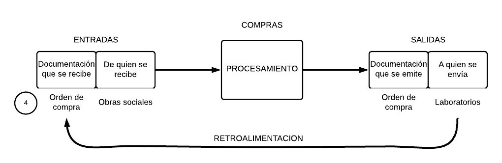
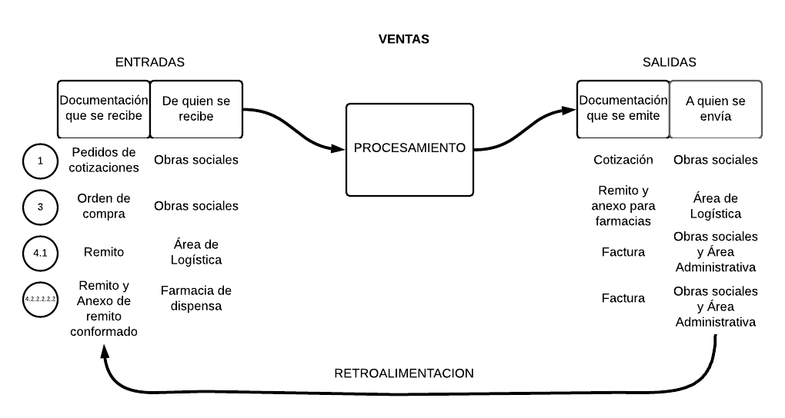
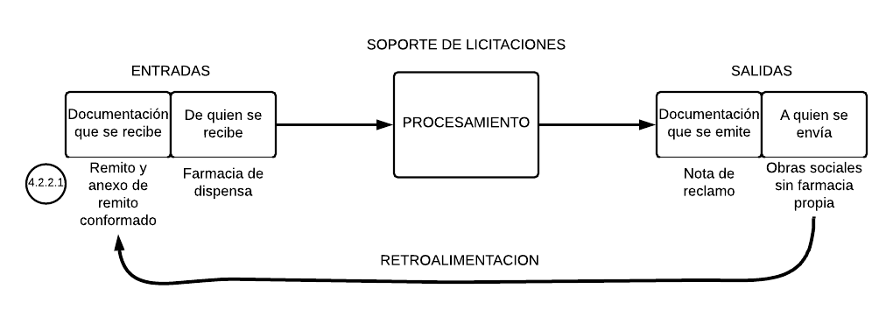

Funcionamiento del sistema
Características de los datos:
- Oportuna.
- Relevante.
- Completa.
- Selectiva.
- Exacta.
- Clara.
- Sencilla.
Análisis de datos relevados
Diagnóstico
Toda la información requerida por el sistema es importante para cumplir con el proceso de
licitaciones, y tiene un claro curso dentro del mismo.
El sistema de información funciona
correctamente bajo los parámetros actuales
Propuestas de mejora
Metodología ágil Kanban
División del sistema de información


